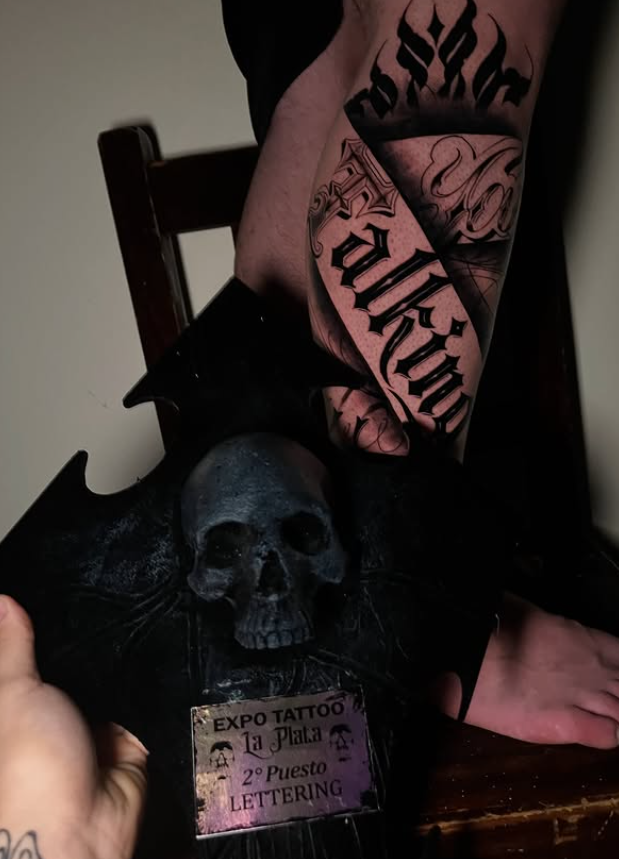

Tatuajes de autor en estudios privados equipados bajo estrictas normas de bioseguridad. Trabajo enfocado en diversas técnicas como Black & Grey, Dark Realism, Lettering Custom y Blackwork. Diseños exclusivos y asesoramiento personalizado.
Elegí la sede que te quede más cercana. Ambos estudios son privados, climatizados y con turnos previamente coordinados.
📍 Av. Cabildo 1777, Piñeyro, Avellaneda, Buenos Aires
📍 Calle 412 & Calle 115, Villa Elisa, Buenos Aires
Hacé clic en cualquier foto para verla en pantalla completa con detalles técnicos.
Detrás de Caber Tattoo hay formación continua, enfoque en el detalle y respeto por la anatomía de cada persona. Cada pieza es diseñada exclusivamente pensando en cómo va a envejecer y cómo fluye con las líneas naturales del cuerpo.

Reconocimiento oficial en convención de tatuajes por calidad técnica, solidez de línea y diseño caligráfico custom de alto impacto.
Definimos juntos el tamaño exacto, la colocación anatómica y el balance de sombras para que la pieza destaque.
Agujas y cartuchos descartables sellados que se abren en tu presencia. Tintas homologadas y campo estéril.
Te entrego las pautas completas de cicatrización y quedo a disposición por WhatsApp ante cualquier duda.
Seleccioná tus preferencias para generar tu consulta directa de WhatsApp al instante.
Pautas previas a la sesión, procedimiento de lavado, marcas recomendadas y conservación en el tiempo.
Podés venir acompañado/a por una sola persona como máximo. Por cuestiones de espacio, higiene y concentración, está prohibido el ingreso con niños o mascotas.
El día anterior a la cita evitá el consumo de alcohol o cualquier sustancia que pueda alterar el cuerpo, ya que influye directamente en la piel y en la cicatrización.
Durante los 3 días previos al turno, aplicate crema humectante diaria en la zona a tatuar. Llegar con la piel bien hidratada ayuda muchísimo a que la tinta entre mejor y la sesión sea más ágil.
No vengas en ayunas ni deshidratado/a. Es muy importante que comas bien antes de la sesión. También podés traerte algo dulce o un snack y una bebida por si hacemos un break en el medio para recargar energías.
Vení con buena onda y relajado/a. Asegurate de estar bien seguro/a de tu diseño, acordate de que es algo que te va a acompañar toda la vida y la idea es que sea una experiencia única y la pases de diez. ¡Nos vemos pronto!
El jabón tiene que ser de pH neutro, suave y sin perfume en lo posible que sea un jabón líquido suave sin perfume y pH neutro.
Lo más recomendable son: Dove piel sensible (líquido) o Cetaphil gel de baño ultra suave o jabón neutro de glicerina.
Elegir siempre versiones sin perfumes, evitar jabón antibacteriales, exfoliantes o perfumados.
Al llegar a tu casa (2hs después de realizarse el tatuaje), te tenés que sacar el film ya que se usa sólo como protección durante el traslado y las primeras horas que es donde la herida está más vulnerable.
A la hora de realizar tanto el primer lavado como los próximos tenés que lavarte bien las manos con otro jabón que no sea el que vas a lavar el tatuaje. Retirar el film suavemente, lavar el tatuaje con agua tibia y con alguno de los jabones anteriormente mencionados. No tenés que frotar ni usar esponja. Si es que vas a usar jabón en barra tenés que hacerte espuma en la mano y colocarlo suavemente sobre el tatuaje.
A la hora de secarlo le tenés que dar toquecitos suaves con papel descartable de cocina y que no deje residuos sobre la piel. Después del lavado y secarlo bien, dejarlo al aire libre y no volver a colocar film.
Las cremas tienen que ser cremas simples, sin perfumes y de base acuosa, evitar productos pesados o con vaselina.
Marcas recomendadas: CeraVe crema hidratante o Cetaphil crema hidratante (elegir siempre versiones sin perfume).
Una vez pasada, aproximadamente una hora del primer lavado del tatuaje y con el tatuaje bien seco ahí se puede poner la primera capa bien finita de crema.
Post curado: Seguir usando cremas hidratantes corporales. Cuando la piel esté seca no hace falta ponérsela todos los días obligatoriamente, con ponérsela una vez al día o cuando la piel esté seca alcanza.
Protector solar (esto es lo más importante para conservar su tatuaje): Cuando el tatuaje se expone al sol usar FPS 50+ de amplio espectro, reaplicar cada dos horas si es que estás al aire libre, después de nadar o transpirar mucho. No hace falta usar protector solar si el tatuaje está completamente cubierto por ropa.